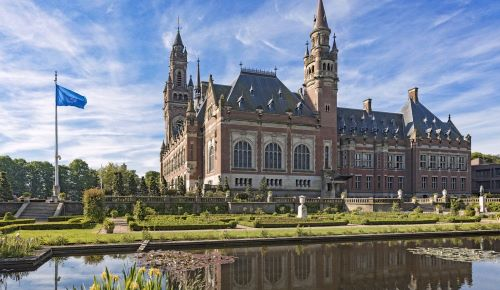
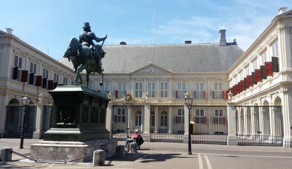

Vredespaleis
2018 is het Europees Jaar van het Erfgoed. Een goede aanleiding om aandacht te besteden aan één van de meest iconische gebouwen in Den Haag; het Vredespaleis. Waarom staat deze internationale Tempel van de Vrede eigenlijk in Den Haag? Wat gebeurt daar allemaal binnen? En wat is er nog meer internationaal aan dit unieke gebouw en wie hebben er allemaal aan bijgedragen?
Daarnaast hebben alle landen die betrokken waren bij de oprichting van het gebouw, geschenken gegeven ter verfraaiing. Het Vredespaleis is de zetel van het Permanent Hof van Arbitrage, het Internationaal Gerechtshof van de Verenigde Naties, de Haagse Academie voor Internationaal Recht, de Bibliotheek van het Vredespaleis en de Carnegie-stichting.
De symbolische waarde van het paleis is niet alleen van betekenis voor Nederland, maar voor de hele internationale gemeenschap van betrokken landen, vandaar dat het gebouw het Europese Erfgoedlabel draagt. Het vredesideaal wordt nog steeds uitgedragen door de Carnegie-stichting die sinds de oprichting in 1904 het gebouw en de gronden beheert.
Paleis Noordeinde
Paleis Noordeinde, met zijn sierlijk aangelegde tuin, is gelegen aan het Noordeinde, één van de meest elegante winkelstraten van Den Haag. Paleis Noordeinde is het middelpunt geweest van belangrijke gebeurtenissen in het leven van de koninklijke familie.
Zo trouwden prinses Juliana en prins Bernhard en prins Constantijn en prinses Laurentien vanuit dit paleis. Wilhelmina en Juliana zijn er geboren. Na hun overlijden lagen hier koningin Juliana (2004) en de prinsen Hendrik (1934), Claus (2002) en Bernhard (2004) opgebaard.
Zowel koning Willem III, zijn tweede echtgenote koningin-moeder Emma als koningin Wilhelmina hebben op Paleis Noordeinde gewoond. Tegenwoordig werkt hier koning Willem-Alexander. Als hij in het land is, wappert de vlag, de koninklijke standaard, op het paleis.